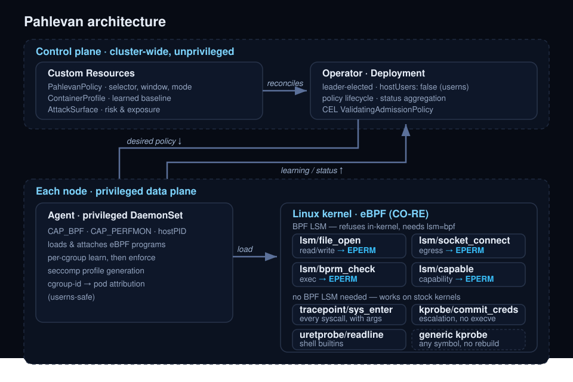

Components
Agent (DaemonSet, one per node)
The agent runs on every node and owns the eBPF data plane:
- Loads and attaches the CO-RE eBPF programs at startup, degrading gracefully when a hook is unavailable (for example, no BPF LSM means observation only).
- Resolves cgroup ids to Kubernetes pods and containers so every event carries real workload identity.
- Builds per-container baselines during the learning window and writes the resulting allow-sets into BPF maps.
- Enforces locally in the kernel. No user-space round trip sits on the hot path, so a denial is a verdict returned by the LSM hook itself.
- Exposes Prometheus metrics on
:8080and health probes on:8081.
It does not run with privileged: true, which is not the same as claiming
to be least-privilege. It requests CAP_BPF, CAP_PERFMON, CAP_SYS_ADMIN,
CAP_SYS_RESOURCE and CAP_NET_ADMIN with readOnlyRootFilesystem: true and
drop: ALL for everything else, and it runs with hostPID: true because kernel
events carry host PIDs that cannot be resolved from inside a PID namespace.
CAP_BPF and CAP_PERFMON were split out of CAP_SYS_ADMIN in Linux 5.8 - the
same release as the agent's own floor - and CAP_SYS_ADMIN is requested
alongside them for the kernels and container runtimes where the finer-grained
pair is not enough on its own.
Operator (Deployment, leader-elected)
The operator is an ordinary controller-runtime manager. It needs no host access
at all, so it runs in a user namespace (hostUsers: false, Kubernetes 1.30+),
which maps in-container root to an unprivileged host UID. It handles:
- Reconciling
PahlevanPolicyresources and driving phase transitions. - Aggregating learning and enforcement status from every node agent.
- Maintaining
ContainerProfileandAttackSurfaceresources. - Admission. At startup the operator creates a CEL
ValidatingAdmissionPolicy(pahlevan-pod-hardening) and its binding; nothing is shipped as a static manifest, and on a cluster whose API server does not serveadmissionregistration.k8s.io/v1the operator starts without it rather than failing. There is no admission webhook, so there is no certificate rotation, no webhook availability risk, and no extra network path in the API server's critical path.pahlevan statusreports whether the policy and binding are present.
Custom resources
| Kind | Scope | Purpose |
|---|---|---|
PahlevanPolicy |
Namespaced | Selects workloads and configures the learning window, enforcement mode, and self-healing. |
ContainerProfile |
Namespaced | The learned baseline for a container: syscalls, file paths, and egress destinations, persisted so restarts do not relearn from zero. |
AttackSurface |
Namespaced | Aggregated posture and risk view derived from the observed and learned data. |
eBPF programs
Eight programs are compiled into the agent. All are CO-RE (compile once, run everywhere): they are built during the image build, the objects and bpf2go bindings are committed to the tree, and no per-node compilation or kernel headers are required at runtime.
Seven of them each watch one fixed thing, because those seven answer the questions a learned baseline needs: which files, which destinations, which binaries, which capabilities, which syscalls, when credentials change, and what a person typed at a shell. The eighth is generic, and exists because that set covers its own subject well and covers everything else not at all.
| Program | Hook | Needs BPF LSM | Role |
|---|---|---|---|
file_monitor.c |
lsm/file_open |
Yes | Observes opens with paths resolved in-kernel via bpf_d_path(), split into separate read and write allow-set entries; denies unlearned paths with EPERM under enforcement. |
network_monitor.c |
lsm/socket_connect |
Yes | Observes IPv4 and IPv6 egress; denies connections to destinations outside the learned allow-set. |
exec_monitor.c |
lsm/bprm_check_security |
Yes | Observes process execution - binary, argv, working directory, and four levels of ancestry - and denies unlearned binaries. Also detects container breakout by comparing the working directory's mount namespace with the task's. |
capability_monitor.c |
lsm/capable |
Yes | Observes every capability check plus the task's effective, permitted, and inheritable sets, so an over-privileged container is visible even when no check was denied. |
syscall_monitor.c |
tracepoint/raw_syscalls/sys_enter |
No | Observes every syscall, deduplicated in-kernel per (cgroup, syscall), with decoded arguments for the syscalls Pahlevan interprets and a watch set of escalation primitives reported on every occurrence. |
cred_monitor.c |
kprobe/commit_creds |
No | Observes every credential change, discriminated by whether an execve was underway, so a setuid binary's expected escalation is separable from one with no execve in progress. |
shell_monitor.c |
uretprobe/readline |
No | Captures one command per interactive shell prompt before the shell parses it - the builtins that produce no exec, no open, and no connect. |
generic_kprobe.c |
kprobe/ any symbol |
No | One pre-compiled program the agent attaches to any kernel function named by an operator, with selectors and an action supplied at attach time. See The generic kprobe. |
Each program has its own kernel floor, because each calls a different set of BPF helpers: 5.8 for syscall, network, capability and shell, 5.10 for file, 5.11 for exec and cred, 5.15 for the generic kprobe. See Kernel requirements.
Run pahlevan coverage for the first seven mapped to the MITRE ATT&CK
techniques their observations are useful evidence for. The generic kprobe is
absent from that table on purpose: what it covers is whatever it was pointed
at, so a fixed mapping would be a guess.
Each enforcing program is driven by two map families: a *_mode map that says
whether the cgroup is off, monitoring, or blocking, and a *_allowed map that
holds the learned allow-set. Flipping a policy to enforcement is a map update,
not a program reload.
Every program passes the kernel verifier before it can attach, runs in the eBPF virtual machine with bounded loops and bounded memory, and is subject to the agent's resource limits.
The generic kprobe
A kernel function outside the seven fixed hooks - a filesystem operation, a
module load path, a driver ioctl, whatever tomorrow's advisory names - used to
be unreachable without writing C, recompiling the agent, and shipping a new
image. bpf/generic_kprobe.c removes that: it is one program, compiled once,
that the agent attaches to any symbol an operator names.
The program carries no knowledge of what it is attached to. Everything that
varies lives in a map keyed by the attach cookie: every kprobe link is
created with its cookie set to the probe's id, and bpf_get_attach_cookie()
returns that id inside the program, so one program attached to forty functions
knows which of the forty is running. Forty probes are forty links over one
program rather than forty copies of it, which is the difference between a
feature and a way to exhaust kernel memory.
Each probe carries:
- Up to five arguments, captured as raw values. Five is what
PT_REGS_PARMexposes portably on both architectures Pahlevan builds for; a sixth is not reachable. Pointer arguments are captured as the pointer and never dereferenced, because a bad address on a hot kernel path is not a risk worth taking for a diagnostic. - Up to four selectors, ANDed. Each compares one source - an argument by
index, or the calling
uid,gidorpid- withEqual,NotEqual,Less,Greater,MaskSet(any of these bits set) orMaskClear(none of them set).uidmatters as much as the arguments do: a probe that can only look at arguments cannot say "when root does it", which is most of what makes a probe worth attaching. Four is the limit because the selectors are evaluated in an unrolled loop and the verifier's instruction budget is not free. - An action, and optionally a cgroup scope. A probe on a kernel function fires for the whole node, the kubelet and the container runtime included, so a scoped probe fires only for the cgroups the agent has been told to govern.
A kprobe cannot refuse the call. It fires alongside the function rather than
in place of it. Refusing would need bpf_override_return, which requires
CONFIG_BPF_KPROBE_OVERRIDE and a target the kernel has marked error
injectable - a short list that does not include most of what anyone wants to
watch. So a probe's action can be report, audit, kill or signal,
and Deny is rejected when the probe is validated, before anything reaches
the kernel, rather than quietly downgraded to observation. A policy that says
Deny and silently only watches is worse than one that fails to load, because
the first one is believed.
Kill and signal are real enforcement, delivered before the task returns to
userspace. That is also why a probe that signals must carry either a selector or
a cgroup scope: signalling every caller of a kernel function, node-wide, with no
condition attached is not a policy anyone means to write, and validation refuses
it for the same reason it refuses Deny.
The attach cookie is a 5.15 helper, so this is the one program that needs a meaningfully newer kernel than the rest of the agent. On anything older it does not load and nothing else is affected.
Today this is an agent-level capability with a Go surface
(pkg/ebpf/kernelprobe.go) and no field on PahlevanPolicy. There is nothing
to put in a YAML file yet.
Learn to enforce
- Select. A
PahlevanPolicyselector matches target pods. The agent identifies their cgroups withbpf_get_current_cgroup_id()and resolves those ids back to pod and container names. - Learn. During the learning window every file the container opens (path
resolved with
bpf_d_path()), every egress destination it dials, and every binary it executes is added to that cgroup's allow-set. Syscalls are observed in parallel and deduplicated per(cgroup, syscall). - Transition. On
learningConfig.autoTransition, or when you flipenforcementConfig.modeby hand, the policy moves to enforcement and a seccomp profile is generated from the learned syscall set. - Enforce. An open of an unlearned path, an egress to an unlearned
destination, or an exec of an unlearned binary is denied in-kernel with
EPERMby the LSM hook, before the operation completes. A detection tool can only tell you it already happened.
enforcementConfig.mode accepts Off, Monitoring, and Blocking. Start in
Monitoring, review the learned profile, then move to Blocking.
Verification
The flow is verified in a VM on Linux 6.8 with the BPF LSM enabled
(hack/vm/up.sh, then make vm-test). Representative output from the
enforcement test:
learned 28 (cgroup,path) allow-set entries
learned /etc/hostname allowed under enforcement
DENIED in-kernel as expected: cat /etc/os-release -> exit status 1
The demo GIF in the README is a scripted replay of exactly this behavior.
Enforcement actions
For a long time there were two answers to an operation outside the learned set:
refuse it with EPERM, or - for exec only - refuse it and kill the task. Two is
not enough for the situations operators are actually in, so the per-cgroup mode
map now carries an action rather than a bare mode byte.
| Action | What the kernel does | Why it exists |
|---|---|---|
Learn |
Observes and widens the allow-set. Denies nothing. | The baseline has to come from somewhere. It is also action 0, so a cgroup nobody has configured behaves exactly as it did before any of this existed. |
Deny |
Refuses with the configured errno, EPERM by default. |
The default enforcement answer. A workload that copes with ENOENT but treats EPERM as fatal is better served by the errno it can handle. |
Kill |
Refuses, and sends SIGKILL to the task that tried. |
For behavior where letting the process continue at all is the wrong answer. |
Audit |
Reports what would have been refused, and allows it. | Rolling enforcement out to a workload you do not fully understand. Learning mode is not a substitute: it widens the allow-set as it goes, so the very thing that would have been denied is added to the set instead of being reported. Audit deliberately does not learn, or it would report each violation once and never again. |
Signal |
Refuses, and sends a configured signal. | SIGSTOP is the reason this exists. Freezing a process leaves its memory, its open descriptors and its thread state intact for an incident responder; SIGKILL destroys exactly that evidence. |
The action, the signal number and the errno pack into the single __u32 the
kernel already reads from the mode map, so the hot path still costs one lookup
and no second map. The errno is validated in userspace before it is written: an
LSM hook must return a value in [-4095, 0], and a value outside that range
would be read by the kernel as a pointer rather than an error.
Audit is the only action that reports a violation and lets it through, which
is what makes it useful during a rollout and worth never confusing with the
others. Events it produces are flagged as would-have-been-denied rather than
denied.
The Learn, Deny and Kill actions correspond to the Monitoring and
Blocking modes a PahlevanPolicy selects today; Audit and Signal are set
through the agent's Go API (pkg/ebpf/action.go) and have no PahlevanPolicy
field yet.
Self-healing
Enforcement built from a learned baseline can be wrong when the baseline was incomplete: a workload path exercised only at month end was never seen during a five-minute window. Self-healing exists so that failure mode degrades availability as little as possible.
The operator watches violation rate and workload health after a transition. When
enforcement correlates with disruption it relaxes the policy, and if relaxation
does not recover the workload it rolls back to monitoring and can restart the
learning phase. Set selfHealing.enabled: false if you would rather have a hard
failure than an automatic rollback.
Security model
- Blast radius is split. The component with kernel privilege has no cluster API power beyond its own node's status reporting; the component with cluster-wide API power runs in a user namespace with no host access.
- No admission webhook. Policy validation is a CEL
ValidatingAdmissionPolicyevaluated by the API server itself. - Namespace scoping. Policies are namespaced and enforced through Kubernetes
RBAC. The
pahlevan-systemnamespace is labelledpod-security.kubernetes.io/enforce: privilegedbecause the agent needs eBPF capabilities; protected workloads live in their own namespaces and keep whatever Pod Security level you already run. - Verifier-gated code. Nothing reaches the kernel that the verifier has not accepted.
Kernel requirements
Each program calls a different set of BPF helpers, and a helper the running kernel does not know is a program that will not load. That makes the floor per-program rather than per-project:
| Capability | Requirement |
|---|---|
| Running at all | Linux 5.8 (BPF_MAP_TYPE_RINGBUF), plus kernel BTF at /sys/kernel/btf/vmlinux and cgroup v2 |
| Syscall, network, capability and shell observation | Linux 5.8 |
| File observation | Linux 5.10 (bpf_d_path) |
| Exec and credential observation | Linux 5.11 (bpf_get_current_task_btf) |
| Ad-hoc kernel probes | Linux 5.15 (bpf_get_attach_cookie) |
In-kernel enforcement (EPERM denials) |
CONFIG_BPF_LSM=y and bpf in the active lsm= list |
| User-namespace operator | Kubernetes 1.30+ |
The syscall monitor is the only program whose load failure stops the agent, because the learned baseline is built on it. Every other program is best effort: one that will not load costs its own observations and leaves the rest running, with a log line saying which helper it could not use.
Without the BPF LSM the agent still loads, still learns, and still reports:
enforcement degrades to monitoring rather than failing. That is the single most
consequential requirement here, and it is a boot parameter rather than a version
number, so a new enough kernel is not evidence of it. See
lsm-support.md for per-distribution details and
system-requirements.md for the helper that sets each
floor and a script that checks one node properly.
Resource profile
Defaults per node agent are 100m CPU and 128Mi memory requested, with
500m / 512Mi limits. The operator requests 50m / 64Mi with 200m /
256Mi limits. Actual usage
tracks event volume: a chatty workload during its learning window costs more
than the same workload once enforcement is on and the ring buffer has gone
quiet, because in-kernel deduplication suppresses repeats.
BPF map preallocation, which dominated an early 327 MiB measurement, is 37.7 MiB
across the seven fixed-hook programs on Linux 6.8. That measurement predates the
generic kprobe, whose maps are sized for 256 probes and 8192 governed cgroups
and are not included in the figure. End-to-end agent resident memory has not
been re-measured since that fix, so no figure is quoted here until the benchmark
is re-run; see benchmarks/.
Scalability
- Containers per node: hundreds, bounded by kernel eBPF map resources.
- Policies per cluster: bounded by etcd and operator reconcile capacity, not by the data plane.
- Events per second: bounded by ring buffer sizing; in-kernel deduplication keeps steady-state volume far below raw syscall rate.
- Learning window: configurable, typically 5 to 30 minutes depending on how much of the workload's behavior a window is likely to cover.
Observability
The agent and operator both export Prometheus metrics, including enforcement and
violation counters. OpenTelemetry export is available, and AttackSurface data
can be exported for dashboards.
Beyond metrics, the agent can deliver events three other ways, because a counter tells you a denial happened and nothing about what was denied:
- JSON lines to a file, which
pahlevan eventsreads and a log shipper tails. - A gRPC stream, which
pahlevan events --grpcandpahlevan uisubscribe to. It is disabled unless the agent is given--grpc-bind-address, and it refuses to start plaintext and unauthenticated unless explicitly told to, because the stream carries every denial on the node. - Formatted notifications to Slack, PagerDuty, or any HTTP endpoint through a Go template - denials only by default, deduplicated per finding, one message per batch.
See deployment.md for wiring all of these into an existing
monitoring stack.